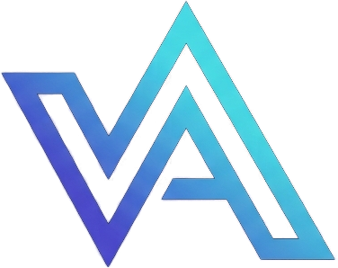
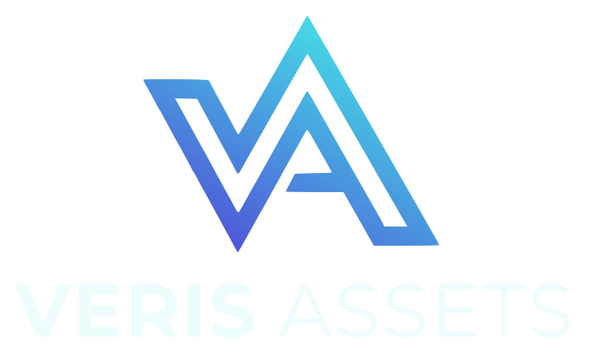

<title>Alexis Vatel</title>
<link rel="icon" type="image/png" href="assets/favicon.png">
<meta name="description" content="Alexis Vatel, Data &amp; AI Product Owner in banking and trade finance, Paris.">
<link rel="preconnect" href="https://fonts.googleapis.com">
<link rel="preconnect" href="https://fonts.gstatic.com" crossorigin>
<link rel="stylesheet" href="https://fonts.googleapis.com/css2?family=Montserrat:wght@300;500;700;800&family=IBM+Plex+Sans:wght@400;500;600&family=IBM+Plex+Mono:wght@400;500&display=swap">
<style>
/* Layout: dark fintech console. Sticky nav, split hero (thesis + portrait), data-pipeline band, capability grid, dated ledger of roles, Veris Assets feature panel, skills meters, contact strip. */
:root {
  --bg: #0a1122;
  --surface: #111a31;
  --line: #22304f;
  --fg: #e6eef8;
  --muted: #93a3bf;
  --indigo: #5a4ee6;
  --cyan: #3fe3ea;
  --accent: #3fe3ea;
  --success: #3ddc97;
  --warning: #f5b84b;
  --grad: linear-gradient(120deg, var(--indigo), var(--cyan));
  --font-display: "Montserrat", "Helvetica Neue", Arial, sans-serif;
  --font-body: "IBM Plex Sans", "Segoe UI", Roboto, sans-serif;
  --font-mono: "IBM Plex Mono", ui-monospace, Menlo, Consolas, monospace;
  color-scheme: dark;
}
@media (prefers-color-scheme: light) {
  :root:not([data-theme="dark"]) {
    --bg: #f5f7fc; --surface: #ffffff; --line: #d9e0ee; --fg: #0d1630; --muted: #55627d;
    --indigo: #4a3fd4; --cyan: #0aa7b3; --accent: #0a8f9a; --success: #0f8a5f; --warning: #a35f00; color-scheme: light;
  }
}
:root[data-theme="light"] {
  --bg: #f5f7fc; --surface: #ffffff; --line: #d9e0ee; --fg: #0d1630; --muted: #55627d;
  --indigo: #4a3fd4; --cyan: #0aa7b3; --accent: #0a8f9a; --success: #0f8a5f; --warning: #a35f00; color-scheme: light;
}

* { box-sizing: border-box; }
html { scroll-behavior: smooth; }
@media (prefers-reduced-motion: reduce) { html { scroll-behavior: auto; } *, *::before, *::after { animation: none !important; transition: none !important; } }
body {
  margin: 0; background: var(--bg); color: var(--fg);
  font-family: var(--font-body); font-size: 1rem; line-height: 1.6;
  -webkit-font-smoothing: antialiased;
}
a { color: inherit; }
a:focus-visible, button:focus-visible { outline: 2px solid var(--accent); outline-offset: 3px; border-radius: 4px; }
.wrap { max-width: 1120px; margin: 0 auto; padding-inline: max(16px, 4vw); }
h1, h2, h3 { font-family: var(--font-display); text-wrap: balance; margin: 0; line-height: 1.12; }
h2 { font-size: clamp(1.75rem, 3.2vw, 2.5rem); font-weight: 800; letter-spacing: -0.01em; }
h3 { font-size: 1.125rem; font-weight: 700; }
p { margin: 0; }
.eyebrow {
  font-family: var(--font-mono); font-size: 0.78rem; letter-spacing: 0.14em; text-transform: uppercase;
  color: var(--accent);
}
.lede { color: var(--muted); max-width: 62ch; font-size: 1.06rem; }
.grad-text { background: var(--grad); -webkit-background-clip: text; background-clip: text; color: transparent; }

/* Monogram: outlined V+A, stroke drawn twice (gradient, then page colour) to hollow it */
.mark { display: block; width: auto; }

/* Nav */
.nav {
  position: sticky; top: env(safe-area-inset-top, 0px); z-index: 10;
  background: color-mix(in srgb, var(--bg) 86%, transparent);
  backdrop-filter: blur(10px); -webkit-backdrop-filter: blur(10px);
  border-bottom: 1px solid var(--line);
}
.nav .wrap { display: flex; align-items: center; justify-content: space-between; gap: 16px; padding-block: 12px; }
.brand { display: flex; align-items: center; gap: 12px; text-decoration: none; }
.brand .mark { height: 36px; }
.brand-word { font-family: var(--font-display); font-size: 1.05rem; letter-spacing: 0.08em; white-space: nowrap; }
.brand-word b { font-weight: 800; }
.brand-word span { font-weight: 300; }
.nav ul { display: flex; gap: 22px; list-style: none; margin: 0; padding: 0; font-size: 0.9rem; }
.nav ul a { text-decoration: none; color: var(--muted); transition: color .2s; }
.nav ul a:hover { color: var(--fg); }
.nav .cta {
  text-decoration: none; font-weight: 600; font-size: 0.88rem; padding: 8px 16px; border-radius: 999px;
  border: 1px solid var(--accent); color: var(--accent); white-space: nowrap;
}
@media (max-width: 880px) { .nav ul { display: none; } }
@media (max-width: 420px) { .brand-word { display: none; } }

/* Hero */
.hero { position: relative; overflow: hidden; }
.hero::before {
  content: ""; position: absolute; inset: 0; pointer-events: none;
  background:
    radial-gradient(600px 360px at 85% 10%, color-mix(in srgb, var(--cyan) 16%, transparent), transparent 70%),
    radial-gradient(520px 320px at 10% 90%, color-mix(in srgb, var(--indigo) 18%, transparent), transparent 70%);
}
.hero .wrap { position: relative; display: grid; grid-template-columns: 1.25fr 0.75fr; gap: 56px; align-items: center; padding-block: 72px 64px; }
.hero-copy { display: grid; gap: 22px; min-width: 0; }
.hero h1 { font-size: clamp(2.3rem, 5.4vw, 4rem); font-weight: 800; letter-spacing: -0.02em; }
.hero .name { font-family: var(--font-display); font-size: 1.1rem; font-weight: 500; letter-spacing: 0.06em; }
.hero .name b { font-weight: 800; }
.actions { display: flex; flex-wrap: wrap; gap: 12px; }
.btn {
  display: inline-flex; align-items: center; gap: 8px; text-decoration: none; font-weight: 600;
  padding: 12px 22px; border-radius: 999px; font-size: 0.95rem;
}
.btn.primary { background: var(--grad); color: #07101f; }
.btn.ghost { border: 1px solid var(--line); color: var(--fg); }
.btn.ghost:hover { border-color: var(--accent); }
.portrait { position: relative; justify-self: end; align-self: start; margin-top: 8px !important; width: 100%; max-width: 340px; }
.portrait img {
  display: block; width: 100%; height: auto; aspect-ratio: 9 / 10; object-fit: cover; object-position: 50% 8%;
  border-radius: 20px; border: 1px solid var(--line);
}
.portrait::after {
  content: ""; position: absolute; inset: -10px 10px 10px -10px; z-index: -1; border-radius: 22px;
  background: var(--grad); opacity: 0.55;
}
.portrait .tag {
  position: absolute; left: -18px; bottom: 22px; display: flex; align-items: center; gap: 8px;
  background: var(--surface); border: 1px solid var(--line); border-radius: 12px; padding: 8px 12px;
  font-family: var(--font-mono); font-size: 0.78rem; color: var(--muted);
}
.portrait .tag i { width: 8px; height: 8px; border-radius: 50%; background: var(--cyan); box-shadow: 0 0 0 4px color-mix(in srgb, var(--cyan) 22%, transparent); }
.kpis { display: grid; grid-template-columns: repeat(3, 1fr); gap: 1px; background: var(--line); border: 1px solid var(--line); border-radius: 14px; overflow: hidden; margin-top: 8px; }
.kpi { background: var(--surface); padding: 16px 18px; display: grid; gap: 2px; }
.kpi strong { font-family: var(--font-display); font-size: 1.6rem; font-weight: 800; font-variant-numeric: tabular-nums; }
.kpi span { font-size: 0.82rem; color: var(--muted); line-height: 1.35; }
@media (max-width: 820px) {
  .hero .wrap { grid-template-columns: 1fr; gap: 40px; padding-block: 48px; }
  .portrait { justify-self: start; max-width: 280px; margin-left: 10px; margin-top: 0 !important; order: -1; }
}
@media (max-width: 480px) { .kpis { grid-template-columns: 1fr; } }

section { padding-block: 88px; border-top: 1px solid var(--line); }
.head { display: grid; gap: 14px; margin-bottom: 44px; }

/* Pipeline */
.pipeline { display: grid; grid-template-columns: repeat(4, 1fr); gap: 0; position: relative; }
.stage { padding: 22px 20px 0 0; display: grid; gap: 10px; align-content: start; position: relative; min-width: 0; }
.stage::before {
  content: ""; position: absolute; top: 0; left: 0; right: 0; height: 2px;
  background: linear-gradient(90deg, var(--indigo), var(--cyan)); opacity: .5;
}
.stage::after {
  content: ""; position: absolute; top: -5px; left: 0; width: 12px; height: 12px; border-radius: 50%;
  background: var(--bg); border: 2px solid var(--cyan);
}
.stage .code { font-family: var(--font-mono); font-size: 0.78rem; color: var(--accent); letter-spacing: .08em; }
.stage p { color: var(--muted); font-size: 0.93rem; }
@media (max-width: 820px) {
  .pipeline { grid-template-columns: 1fr; gap: 28px; padding-left: 18px; border-left: 2px solid color-mix(in srgb, var(--cyan) 45%, transparent); }
  .stage { padding: 0; }
  .stage::before { display: none; }
  .stage::after { top: 4px; left: -26px; }
}

/* Capabilities */
.caps { display: grid; grid-template-columns: repeat(2, 1fr); gap: 16px; margin-top: 56px; }
.cap { background: var(--surface); border: 1px solid var(--line); border-radius: 16px; padding: 24px; display: grid; gap: 10px; align-content: start; }
.cap p { color: var(--muted); font-size: 0.95rem; }
.cap .chips { display: flex; flex-wrap: wrap; gap: 6px; margin-top: 4px; }
.chip { font-family: var(--font-mono); font-size: 0.74rem; padding: 3px 9px; border-radius: 999px; border: 1px solid var(--line); color: var(--muted); }
@media (max-width: 700px) { .caps { grid-template-columns: 1fr; } }

/* Experience ledger */
.ledger { display: grid; }
.role { display: grid; grid-template-columns: 150px 1fr; gap: 28px; padding-block: 28px; border-top: 1px solid var(--line); }
.role:first-child { border-top: 0; padding-top: 0; }
.when { font-family: var(--font-mono); font-size: 0.86rem; color: var(--accent); font-variant-numeric: tabular-nums; padding-top: 3px; }
.what { display: grid; gap: 10px; min-width: 0; }
.what .org { color: var(--muted); font-size: 0.92rem; }
.what .org b { color: var(--fg); font-weight: 600; }
.what ul { margin: 4px 0 0; padding: 0; list-style: none; display: grid; gap: 8px; }
.what li { padding-left: 18px; position: relative; color: var(--muted); font-size: 0.95rem; max-width: 72ch; }
.what li::before { content: ""; position: absolute; left: 0; top: 0.62em; width: 8px; height: 2px; background: var(--cyan); }
.what li b { color: var(--fg); font-weight: 600; }
.role.compact .what { gap: 4px; }
@media (max-width: 640px) { .role { grid-template-columns: 1fr; gap: 6px; } }

/* Veris Assets */
.veris {
  position: relative; overflow: hidden; border-radius: 24px; border: 1px solid var(--line);
  background:
    radial-gradient(500px 280px at 90% 0%, color-mix(in srgb, var(--cyan) 14%, transparent), transparent 70%),
    radial-gradient(500px 280px at 0% 100%, color-mix(in srgb, var(--indigo) 20%, transparent), transparent 70%),
    var(--surface);
  display: grid; grid-template-columns: 1.05fr 0.95fr; gap: 48px; padding: 48px; align-items: start;
}
.veris-copy { display: grid; gap: 18px; min-width: 0; }
.veris-logo { justify-self: start; background: #0a1122; border-radius: 14px; padding: 12px 18px; }
.veris-logo img { display: block; height: 52px; width: auto; }
.steps { list-style: none; margin: 4px 0 0; padding: 0; display: grid; grid-template-columns: repeat(2, 1fr); gap: 14px 20px; }
.steps li { border-top: 2px solid var(--cyan); padding-top: 10px; display: grid; gap: 4px; }
.steps strong { font-family: var(--font-display); font-size: 0.95rem; }
.steps span { color: var(--muted); font-size: 0.86rem; line-height: 1.45; }
.veris-note { color: var(--muted); font-size: 0.85rem; }
/* Northwind card: mirrors the issuer portal preview on veris-assets.com */
.issuance { position: relative; }
.issuance::before { content: ""; position: absolute; inset: -1px; border-radius: 18px; background: var(--grad); opacity: .55; filter: blur(6px); }
.issuance-card { position: relative; background: var(--surface); border: 1px solid var(--line); border-radius: 18px; overflow: hidden; display: grid; gap: 16px; padding: 0 20px 18px; }
.issuance-photo { position: relative; margin: 0 -20px; }
.issuance-photo img { display: block; width: 100%; height: 140px; object-fit: cover; }
.illus { position: absolute; top: 12px; left: 12px; font-family: var(--font-mono); font-size: 0.66rem; font-weight: 500; letter-spacing: .1em; text-transform: uppercase; color: var(--warning); background: color-mix(in srgb, var(--bg) 88%, transparent); border: 1px solid color-mix(in srgb, var(--warning) 60%, transparent); border-radius: 999px; padding: 3px 10px; }
.issuance-head { display: flex; justify-content: space-between; align-items: start; gap: 12px; }
.issuance-head > div { display: grid; gap: 3px; min-width: 0; }
.issuance-head h3 { font-size: 1.1rem; }
.issuance-head .sub { color: var(--muted); font-size: 0.85rem; }
.issuance-head .desc { font-size: 0.88rem; }
.status { flex: none; font-size: 0.74rem; font-weight: 600; color: var(--success); border: 1px solid color-mix(in srgb, var(--success) 45%, transparent); border-radius: 999px; padding: 2px 10px; }
.stats { display: grid; grid-template-columns: repeat(3, 1fr); gap: 8px; margin: 0; }
.stats div { background: color-mix(in srgb, var(--line) 45%, transparent); border-radius: 10px; padding: 10px; min-width: 0; }
.stats dt { color: var(--muted); font-size: 0.72rem; line-height: 1.3; }
.stats dd { margin: 4px 0 0; font-family: var(--font-display); font-weight: 700; font-size: 1.1rem; font-variant-numeric: tabular-nums; }
.bar-label { display: flex; justify-content: space-between; color: var(--muted); font-size: 0.75rem; margin-bottom: 6px; }
.bar { height: 6px; border-radius: 3px; background: color-mix(in srgb, var(--line) 60%, transparent); overflow: hidden; }
.bar i { display: block; height: 100%; width: 82%; background: var(--accent); border-radius: 3px; }
.registry { width: 100%; border-collapse: collapse; font-size: 0.85rem; }
.registry caption { text-align: left; font-family: var(--font-mono); font-size: 0.7rem; letter-spacing: .12em; text-transform: uppercase; color: var(--muted); margin-bottom: 4px; }
.registry td { padding: 7px 0; border-top: 1px solid var(--line); }
.registry td + td { text-align: right; font-variant-numeric: tabular-nums; }
.registry td:nth-child(2) { color: var(--muted); }
.registry td:last-child { font-weight: 600; }
.checks { list-style: none; margin: 0; padding: 0; display: grid; gap: 6px; font-size: 0.78rem; }
.checks li { display: flex; gap: 8px; align-items: center; }
.checks .ok { color: var(--success); }
.checks .chain { color: var(--accent); }
.yield { border-top: 1px solid var(--line); padding-top: 10px; color: var(--muted); font-size: 0.72rem; line-height: 1.45; }
@media (max-width: 900px) { .veris { grid-template-columns: 1fr; padding: 32px 20px; } }
@media (max-width: 480px) { .steps { grid-template-columns: 1fr; } .stats dd { font-size: 1rem; } }

/* Education + skills */
.two { display: grid; grid-template-columns: 1fr 1fr; gap: 56px; }
.two > div { min-width: 0; }
.edu { display: grid; }
.edu-row { display: flex; justify-content: space-between; gap: 16px; padding-block: 16px; border-top: 1px solid var(--line); }
.edu-row:first-child { border-top: 0; }
.edu-row strong { display: block; font-weight: 600; }
.edu-row em { color: var(--muted); font-style: normal; font-size: 0.9rem; }
.edu-row .when { white-space: nowrap; padding-top: 1px; }
.edu-row.cert strong { color: var(--accent); }
.skills { display: grid; gap: 14px; }
.skill { display: flex; align-items: center; justify-content: space-between; gap: 16px; }
.skill span { font-size: 0.95rem; }
.meter { display: flex; gap: 5px; flex: none; }
.meter i { width: 26px; height: 8px; border-radius: 4px; background: var(--line); }
.meter i.on { background: var(--grad); }
.skills-group + .skills-group { margin-top: 28px; }
.skills-group h3 { font-family: var(--font-mono); font-size: 0.78rem; font-weight: 500; letter-spacing: .14em; text-transform: uppercase; color: var(--muted); margin-bottom: 14px; }
@media (max-width: 820px) { .two { grid-template-columns: 1fr; gap: 48px; } }

/* Contact */
.contact { display: grid; grid-template-columns: 1.1fr 0.9fr; gap: 40px; align-items: end; }
.contact-list { display: grid; gap: 1px; background: var(--line); border: 1px solid var(--line); border-radius: 14px; overflow: hidden; }
.contact-item { background: var(--surface); padding: 16px 18px; display: flex; justify-content: space-between; align-items: center; gap: 12px; flex-wrap: wrap; }
.contact-item .k { font-family: var(--font-mono); font-size: 0.74rem; letter-spacing: .12em; text-transform: uppercase; color: var(--muted); }
.contact-item .v { font-weight: 500; user-select: all; overflow-wrap: anywhere; }
.copy { font: inherit; font-size: 0.8rem; background: none; border: 1px solid var(--line); color: var(--muted); border-radius: 999px; padding: 4px 12px; cursor: pointer; }
.copy:hover { color: var(--fg); border-color: var(--accent); }
@media (max-width: 820px) { .contact { grid-template-columns: 1fr; } }

footer { border-top: 1px solid var(--line); padding-block: 28px; color: var(--muted); font-size: 0.85rem; }
footer .wrap { display: flex; justify-content: space-between; gap: 16px; flex-wrap: wrap; align-items: center; }
footer .brand .mark { height: 26px; }
</style>


<header class="nav">
  <div class="wrap">
    <a class="brand" href="#top" aria-label="Vatel Alexis, home">
      
      <span class="brand-word"><b>VATEL</b> <span>ALEXIS</span></span>
    </a>
    <ul>
      <li><a href="#expertise">Expertise</a></li>
      <li><a href="#experience">Experience</a></li>
      <li><a href="#veris">Veris Assets</a></li>
      <li><a href="#education">Education</a></li>
    </ul>
    <a class="cta" href="#contact">Get in touch</a>
  </div>
</header>

<main id="top">
  <div class="hero">
    <div class="wrap">
      <div class="hero-copy">
        <p class="eyebrow">Data &amp; AI Product Owner · Banking &amp; Trade Finance</p>
        <h1>Turning financial data into <span class="grad-text">products people trust.</span></h1>
        <p class="name"><b>Alexis Vatel</b> · Paris area</p>
        <p class="lede">I lead data products in corporate and investment banking, from legacy decommissioning to modern Datalake and DataViz platforms. I bring business, feature teams and data governance together, and use machine learning where it improves data quality.</p>
        <div class="actions">
          <a class="btn primary" href="#experience">View my track record</a>
          <a class="btn ghost" href="#veris">Discover Veris Assets</a>
        </div>
        <div class="kpis" role="list">
          <div class="kpi" role="listitem"><strong>15 yrs</strong><span>in project, PMO and data roles since 2011</span></div>
          <div class="kpi" role="listitem"><strong>100+</strong><span>critical business reports migrated to new DataViz tools</span></div>
          <div class="kpi" role="listitem"><strong>2022</strong><span>Data &amp; AI Product Owner certification, Paris Dauphine</span></div>
        </div>
      </div>
      <figure class="portrait" style="margin:0">
        
        <figcaption class="tag"><i></i>Société Générale · since 2018</figcaption>
      </figure>
    </div>
  </div>

  <section id="expertise">
    <div class="wrap">
      <div class="head">
        <p class="eyebrow">Expertise</p>
        <h2>From raw records to shared business insight</h2>
        <p class="lede">The Datalake layering strategy I orchestrated for Société Générale Trade Finance. Each layer adds normalization, enrichment and quality control before data reaches report builders.</p>
      </div>
      <div class="pipeline">
        <div class="stage"><span class="code">01 · RAW</span><h3>Ingest</h3><p>Land source data from legacy systems as-is, with full traceability back to the origin.</p></div>
        <div class="stage"><span class="code">02 · BUSINESS OBJECT</span><h3>Model</h3><p>Normalize and enrich into Trade Finance data models the business recognizes.</p></div>
        <div class="stage"><span class="code">03 · SHARED USAGE VIEWS</span><h3>Expose</h3><p>Publish governed, reusable views with automated quality controls built in.</p></div>
        <div class="stage"><span class="code">04 · DATAVIZ</span><h3>Adopt</h3><p>Train and coach report builders so the business moves to the new tools for good.</p></div>
      </div>

      <div class="caps">
        <article class="cap">
          <h3>Product strategy &amp; agile leadership</h3>
          <p>Roadmaps structured as Epics and User Stories, prioritized for value, and delivered with feature teams.</p>
          <div class="chips"><span class="chip">Roadmap</span><span class="chip">Epics &amp; User Stories</span><span class="chip">Feature teams</span></div>
        </article>
        <article class="cap">
          <h3>Data modeling &amp; urbanization</h3>
          <p>Complex Trade Finance data models, business usage views and warehouse integration of business requirements.</p>
          <div class="chips"><span class="chip">Datalake</span><span class="chip">Data models</span><span class="chip">SQL</span></div>
        </article>
        <article class="cap">
          <h3>Governance, quality &amp; compliance</h3>
          <p>Automated quality controls, anomaly tracking with business owners, and maturity assessments covering GDPR and architecture.</p>
          <div class="chips"><span class="chip">Data quality</span><span class="chip">GDPR</span><span class="chip">Portfolio steering</span></div>
        </article>
        <article class="cap">
          <h3>AI &amp; advanced analytics</h3>
          <p>Random Forest and NLP models that find data gaps early, plus qualification of high-impact Data &amp; AI use cases across business units.</p>
          <div class="chips"><span class="chip">Machine learning</span><span class="chip">NLP</span><span class="chip">Gen AI</span></div>
        </article>
      </div>
    </div>
  </section>

  <section id="experience">
    <div class="wrap">
      <div class="head">
        <p class="eyebrow">Experience</p>
        <h2>Track record</h2>
      </div>
      <div class="ledger">
        <article class="role">
          <div class="when">2022 – today</div>
          <div class="what">
            <h3>Data Product Owner</h3>
            <p class="org"><b>Société Générale · Trade Finance</b> · Strategic BI modernization &amp; Datalake migration</p>
            <p class="lede" style="font-size:.95rem">Led the decommissioning of a legacy self-BI data warehouse and the end-to-end migration to a Datalake architecture and an internal DataViz ecosystem.</p>
            <ul>
              <li><b>Product strategy &amp; agile leadership.</b> Defined the data product roadmap through Epics and User Stories, steering feature teams toward high-value delivery.</li>
              <li><b>Data urbanization &amp; modeling.</b> Designed Trade Finance data models and orchestrated the Datalake layering, from RAW to Business Object and Shared Usage Views.</li>
              <li><b>Change management &amp; scaling.</b> Trained and coached a community of report builders to rebuild 100+ critical business reports in the new DataViz tools.</li>
              <li><b>Data governance &amp; quality.</b> Worked with business stakeholders to find anomalies and put automated quality controls in the Lake.</li>
              <li><b>Advanced analytics (AI).</b> Used Random Forest and NLP models to detect data gaps and improve the quality of the data assets.</li>
            </ul>
          </div>
        </article>
        <article class="role">
          <div class="when">2018 – 2022</div>
          <div class="what">
            <h3>PMO</h3>
            <p class="org"><b>Société Générale · Wholesale Data Office</b></p>
            <ul>
              <li><b>Portfolio management.</b> Ran budget allocation and delivery steering for data projects, aligned with business priorities and ROI.</li>
              <li><b>Data excellence.</b> Led project maturity assessments on data quality, protection (GDPR) and architecture principles.</li>
              <li><b>Business partnership.</b> Identified and qualified high-impact Data &amp; AI use cases across business units.</li>
              <li><b>Agile reporting.</b> Built tactical dashboards for business units with limited budget or technical resources.</li>
            </ul>
          </div>
        </article>
        <article class="role">
          <div class="when">2016 – 2018</div>
          <div class="what">
            <h3>Data Project Manager</h3>
            <p class="org"><b>JCDecaux</b></p>
            <ul>
              <li><b>Requirements engineering.</b> Integrated complex business requirements into the core data warehouse.</li>
              <li><b>Data quality &amp; modeling.</b> Designed business usage views and automated quality controls.</li>
              <li><b>Analytics &amp; visualization.</b> Built steering dashboards in Tableau to drive data-led decisions.</li>
            </ul>
          </div>
        </article>
        <article class="role compact">
          <div class="when">2015 – 2016</div>
          <div class="what"><h3>Project Management Officer</h3><p class="org"><b>HSBC</b> · Consulting · Core banking system modernization: capacity management, roadmap and budget.</p></div>
        </article>
        <article class="role compact">
          <div class="when">2014 – 2015</div>
          <div class="what"><h3>Project Management Officer</h3><p class="org"><b>Servier</b> · Consulting · Business Intelligence department: capacity management, project roadmaps and budgets.</p></div>
        </article>
        <article class="role compact">
          <div class="when">2011 – 2014</div>
          <div class="what"><h3>Vehicle Schedule Engineer</h3><p class="org"><b>Renault Group</b> · Consulting · Mégane and Scénic serial-life modifications, 70 projects followed.</p></div>
        </article>
      </div>
    </div>
  </section>

  <section id="veris">
    <div class="wrap">
      <div class="veris">
        <div class="veris-copy">
          <p class="eyebrow">Venture</p>
          <div class="veris-logo"></div>
          <h2>Issue and manage private bonds, from first draft to final redemption.</h2>
          <p class="lede">Veris Assets is software for private bond issuers and asset managers. It structures bonds and notes, qualifies professional investors, collects subscriptions and keeps the registry. Coupons, redemptions and reporting follow, with no spreadsheet.</p>
          <p class="lede">I built it as a product owner: one data model for the whole lifecycle, clear statuses, four-eyes approvals and an audit trail on every step.</p>
          <ol class="steps">
            <li><strong>Structure</strong><span>Terms, schedule, eligibility rules and documents in a guided wizard.</span></li>
            <li><strong>Onboard</strong><span>KYC/KYB files, beneficial owners and eligibility checks in plain language.</span></li>
            <li><strong>Subscribe &amp; allocate</strong><span>Online subscriptions, fair allocation of oversubscribed issuances.</span></li>
            <li><strong>Register &amp; service</strong><span>Registry reconciled daily, coupons, redemptions, notices and exports.</span></li>
          </ol>
          <div class="actions">
            <a class="btn primary" href="https://veris-assets.com/en" target="_blank" rel="noopener">Visit veris-assets.com</a>
          </div>
          <p class="veris-note">Professional investors only. The example on the right is fictitious demo data.</p>
        </div>

        <figure class="issuance" aria-label="An illustrative issuance, as shown in Veris Assets" style="margin:0">
          <div class="issuance-card">
            <div class="issuance-photo">
              
              <span class="illus">Illustrative example</span>
            </div>
            <div class="issuance-head">
              <div>
                <h3>Northwind Green Notes</h3>
                <p class="sub">5-year notes · 5% semi-annual coupon</p>
                <p class="desc">Helps finance a 12 MWp solar farm on former industrial land near Toulouse, France.</p>
              </div>
              <span class="status">Active</span>
            </div>
            <dl class="stats">
              <div><dt>Nominal administered</dt><dd>€1M</dd></div>
              <div><dt>Holders</dt><dd>3</dd></div>
              <div><dt>Next coupon</dt><dd>15 Mar</dd></div>
            </dl>
            <div>
              <div class="bar-label"><span>Subscribed</span><span>82%</span></div>
              <div class="bar" role="img" aria-label="82% subscribed"><i></i></div>
            </div>
            <table class="registry">
              <caption>Registry</caption>
              <tr><td>Alpine Capital Partners</td><td>100</td><td>€2,500</td></tr>
              <tr><td>Baltic Pension Fund</td><td>250</td><td>€6,250</td></tr>
              <tr><td>Cedar Family Office</td><td>150</td><td>€3,750</td></tr>
            </table>
            <ul class="checks">
              <li class="ok"><svg width="14" height="14" viewBox="0 0 24 24" fill="none" stroke="currentColor" stroke-width="2.4" aria-hidden="true"><path d="M5 12l5 5L20 7"/></svg>Coupon approved with four eyes</li>
              <li class="chain"><svg width="14" height="14" viewBox="0 0 24 24" fill="none" stroke="currentColor" stroke-width="2.2" aria-hidden="true"><path d="M10 14a4 4 0 0 0 5.7 0l3-3a4 4 0 0 0-5.7-5.7l-1 1M14 10a4 4 0 0 0-5.7 0l-3 3a4 4 0 0 0 5.7 5.7l1-1"/></svg>Ledger verified, hash chain intact</li>
            </ul>
            <figcaption class="yield">Illustrative target yield, not guaranteed. Investing in private assets carries a risk of capital loss and illiquidity.</figcaption>
          </div>
        </figure>
      </div>
    </div>
  </section>

  <section id="education">
    <div class="wrap two">
      <div>
        <div class="head"><p class="eyebrow">Education</p><h2>Background</h2></div>
        <div class="edu">
          <div class="edu-row cert"><div><strong>Data &amp; AI Product Owner certification</strong><em>Université Paris Dauphine</em></div><span class="when">2022</span></div>
          <div class="edu-row"><div><strong>UTC, Université de Technologie de Compiègne</strong><em>Engineering degree</em></div><span class="when">2008 – 2011</span></div>
          <div class="edu-row"><div><strong>University of Helsinki, Finland</strong><em>Erasmus program</em></div><span class="when">2010</span></div>
          <div class="edu-row"><div><strong>Classe préparatoire PT</strong><em>Physique et Technologie, Lille</em></div><span class="when">2006 – 2008</span></div>
        </div>
      </div>
      <div>
        <div class="head"><p class="eyebrow">Skills</p><h2>Toolbox</h2></div>
        <div class="skills-group">
          <h3>Data &amp; tech</h3>
          <div class="skills">
            <div class="skill"><span>Gen AI &amp; machine learning</span><span class="meter" role="img" aria-label="4 out of 5"><i class="on"></i><i class="on"></i><i class="on"></i><i class="on"></i><i></i></span></div>
            <div class="skill"><span>SQL, Python, HTML</span><span class="meter" role="img" aria-label="4 out of 5"><i class="on"></i><i class="on"></i><i class="on"></i><i class="on"></i><i></i></span></div>
            <div class="skill"><span>Tableau, Power BI</span><span class="meter" role="img" aria-label="4 out of 5"><i class="on"></i><i class="on"></i><i class="on"></i><i class="on"></i><i></i></span></div>
            <div class="skill"><span>Office suite incl. VBA</span><span class="meter" role="img" aria-label="5 out of 5"><i class="on"></i><i class="on"></i><i class="on"></i><i class="on"></i><i class="on"></i></span></div>
          </div>
        </div>
        <div class="skills-group">
          <h3>Delivery &amp; languages</h3>
          <div class="skills">
            <div class="skill"><span>Project management</span><span class="meter" role="img" aria-label="5 out of 5"><i class="on"></i><i class="on"></i><i class="on"></i><i class="on"></i><i class="on"></i></span></div>
            <div class="skill"><span>Agile methodology</span><span class="meter" role="img" aria-label="4 out of 5"><i class="on"></i><i class="on"></i><i class="on"></i><i class="on"></i><i></i></span></div>
            <div class="skill"><span>English</span><span class="meter" role="img" aria-label="5 out of 5"><i class="on"></i><i class="on"></i><i class="on"></i><i class="on"></i><i class="on"></i></span></div>
            <div class="skill"><span>Spanish</span><span class="meter" role="img" aria-label="2 out of 5"><i class="on"></i><i class="on"></i><i></i><i></i><i></i></span></div>
          </div>
        </div>
      </div>
    </div>
  </section>

  <section id="contact">
    <div class="wrap contact">
      <div class="head" style="margin:0">
        <p class="eyebrow">Contact</p>
        <h2>Let's build your next <span class="grad-text">data product.</span></h2>
        <p class="lede">Open to Data &amp; AI Product Owner opportunities in banking, asset management and fintech.</p>
      </div>
      <div class="contact-list">
        <div class="contact-item"><div><div class="k">Email</div><a class="v" href="mailto:vatelalexis@gmail.com">vatelalexis@gmail.com</a></div><button class="copy" type="button" id="copy-email" data-copy="vatelalexis@gmail.com">Copy</button></div>
        <div class="contact-item"><div><div class="k">Phone</div><span class="v">+33 6 25 61 21 94</span></div><button class="copy" type="button" id="copy-phone" data-copy="+33625612194">Copy</button></div>
        <div class="contact-item"><div><div class="k">Based in</div><span class="v">Asnières-sur-Seine, Paris area</span></div></div>
      </div>
    </div>
  </section>
</main>

<footer>
  <div class="wrap">
    <a class="brand" href="#top" aria-label="Back to top">
      
      <span class="brand-word"><b>VATEL</b> <span>ALEXIS</span></span>
    </a>
    <span>© 2026 Alexis Vatel · Data &amp; AI Product Owner</span>
  </div>
</footer>

<script>
document.querySelectorAll('.copy').forEach(function (b) {
  b.addEventListener('click', function () {
    var t = b.getAttribute('data-copy');
    var done = function () { b.textContent = 'Copied'; setTimeout(function () { b.textContent = 'Copy'; }, 1600); };
    try {
      navigator.clipboard.writeText(t).then(done, function () { selectText(b); });
    } catch (e) { selectText(b); }
  });
});
function selectText(b) {
  var v = b.parentElement.querySelector('.v');
  var r = document.createRange(); r.selectNodeContents(v);
  var s = window.getSelection(); s.removeAllRanges(); s.addRange(r);
}
</script>
